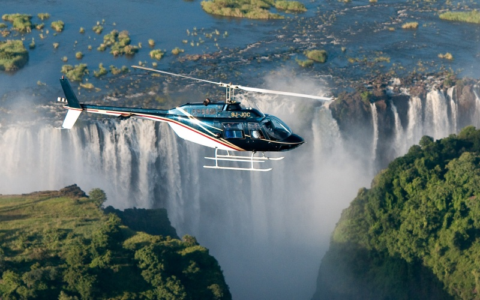
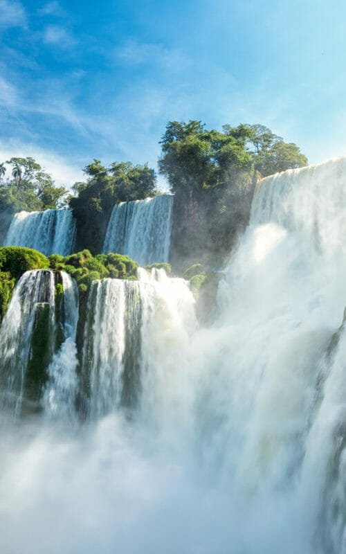
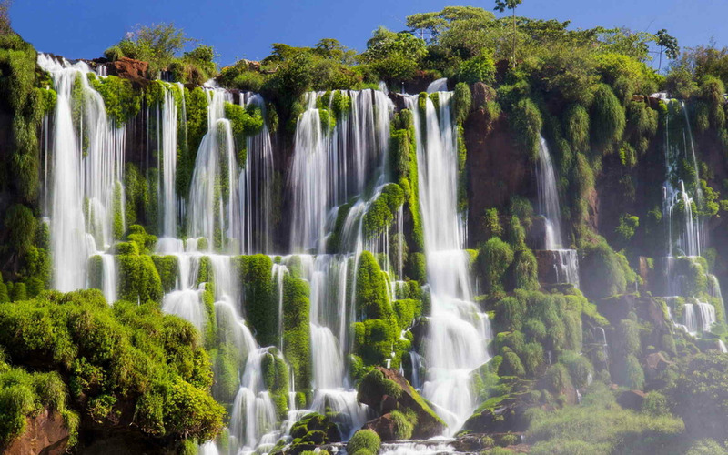

Южная Америка
Южная Америка
Мачу-Пикчу

Мачу-Пикчу, особенно после получения статуса Всемирного Наследия ЮНЕСКО, стал центром массового туризма. В 2011 году было принято решение ограничить количество посетителей. По новым правилам только 2500 туристов в день могут посетить Мачу-Пикчу, из них не более 400 человек могут подняться на гору Уайна-Пикчу, являющуюся частью археологического комплекса.

Мачу-Пикчу — город древней Америки, находящийся на территории современного Перу, в 6 километрах от посёлка Агуас-Кальентес, на вершине горного хребта на высоте 2400 метров над уровнем моря.
Более чем на 400 лет этот город был забыт и пребывал в запустении. Его обнаружил американский исследователь из Йельского университета, профессор Хайрам Бингем 24 июля 1911 года, после того как лётчики увидели его с самолёта. Когда он добрался сюда в сопровождении выделенного правительством отряда охраны и местного мальчика-проводника, он обнаружил живущих там крестьян.
Водопады Игуасу
Водопады Игуасу — комплекс из 275 водопадов на реке Игуасу, расположенный на границе Бразилии и Аргентины. Водопады находятся на границе аргентинского и бразильского национальных парков «Игуасу». Оба парка были включены в список Всемирного наследия ЮНЕСКО.
Название Iguazú (Игуасу) происходит от слов на языке гуарани (вода) и guasu (большой)


Водопады расположены примерно в 23 км от устья реки Игуасу. Комплекс имеет ширину 2,7 км и включает в себя примерно 275 отдельных водопадов. Высота падения воды достигает 82 метров, но на большинстве водопадов чуть больше 60 метров. Крупнейший водопад — «Горло Дьявола»
Встреча Вод, Бразилия
Манаус – крупнейший город северной Бразилии, который находится в месте слияния двух рек – Рио-Негро, текущая из Колумбии, и песчаная Рио Солимойнс, из Перу.
“Встреча вод” – это явление, которое происходит в бассейне Амазонки после слияния рек Амазонки с мутной водой, и реки Солимойнс с черной водой. На протяжении шести километров (22 км в определенное время) две реки текут бок о бок, не смешивая свои воды, из-за разных плотностей и скоростей. Это очень интересный эффект, на который можно посмотреть, сфотографировать и рассказать всем, кому интересно.
Воды реки Рио-Негро более темные, медленные и намного более тяжелые, чем воды Солимойнс. Температура, плотность, скорость воды — все это разделяет эти водные потоки на протяжение более 6 километров, прежде чем они формируют великую Амазонку.
Эти места знамениты своим огромным разнообразием флоры и фауны. Не удивительно, что это одно из самых популярных туристических предназначений не только Бразилии, но и всей Южной Америки
Торрес-дель-Пайне Национальный парк, Чили
Чилийская Патагония полна красивых природных чудес. Одно из них вы не должны пропустить – это биосферный заповедник ЮНЕСКО Торрес-дель-Пайне, самая впечатляющая достопримечательность в южном полушарии, с рядом классических мировых пешеходных маршрутов.
арк расположен в крупнейшем южном регионе Чили Magellanes и чилийской Антарктике, где основные виды экономической деятельности – овцеводство, добыча нефти и туризм. Парк охватывает древние леса, ледники, реки, озера и фьорды, фауну, включая гуанако, лисиц, пумы и разнообразных птиц.
Парк привлекает примерно 100000 посетителей каждый год, которые посещают Paine Towers, Лос Cuernos, французскую долину и Серый ледник.
Природный мир национального парка весьма разнообразен. Здесь имеются районы оледенения, горные массивы, озёра, тундра и большие леса, в которых растут кипарисовые, буковые и экстоксиковые растения, а также много цветов — в том числе и орхидеи. Из представителей животного мира, обитающих в Торрес-дель-Пайне, следует назвать пуму, гуанако, малого нанду и андского кондора.